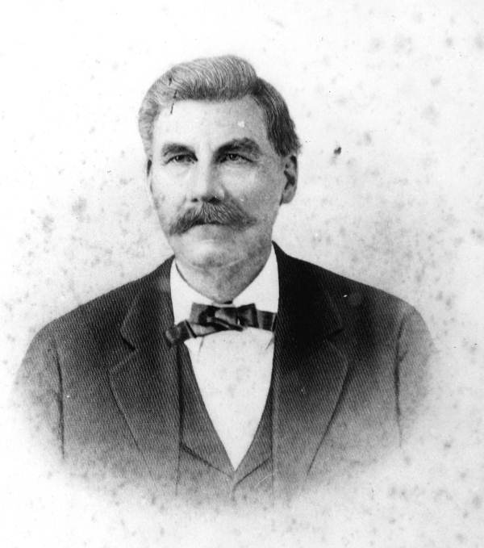

Ziba King: King of the Peace River Cattle Country (Rev. 3)
FLORIDA LEARNING HUB · Mini Article · Florida Cracker Cattle and Ranching Heritage
FLORIDA LEARNING HUB MINI ARTICLE · Florida Cracker Cattle and Ranching Heritage · FLH-0323
Ziba King: King of the Peace River Cattle Country
The Rancher, Merchant, Banker, and Lawmaker Who Helped Build Arcadia
He stood six feet six inches tall and weighed two hundred twenty-five pounds, and by every account, Ziba King commanded a room the moment he walked into it. He arrived in Florida with almost nothing, built one of the largest cattle herds in state history, served in both houses of the Florida legislature, ran the bank that financed a growing frontier town, and, according to local memory, was skilled enough at poker to bankrupt a man at the table — and generous enough to quietly hand some of the winnings back so the loser could start again.
This article continues Florida Learning Hub's Cracker Cattle pillar, turning to the man a National Park Service history of Arcadia identifies as the most prominent among the town's own “cattle kings.”
He arrived in Florida with almost nothing, built one of the largest cattle herds in state history, served in both houses of the Florida legislature, and ran the bank that financed a growing frontier town.
From Georgia to the Peace River
Ziba King was born in 1838 in Ware County, Georgia. During the Civil War, he enlisted with the Confederate Army in 1862. By 1868, King had made his way to Tampa, where he began his working life in Florida selling dry goods, before moving south to the Peace River country around Fort Ogden and turning to cattle ranching — the business that would define the rest of his life.

King homesteaded one hundred sixty acres near Fort Ogden and built his herd steadily from there. By 1882, he owned an estimated thirty thousand head of cattle. By the time of his death in 1901, that herd had grown to roughly fifty thousand head — by contemporary estimate, close to ten percent of all the cattle in the state of Florida.
Judge, Senator, and Banker
Manatee County records from 1873 through 1876 show King serving repeated terms as a Justice of the Peace, the origin of the “Judge King” title that stuck with him for life. In 1888, he was elected on an independent ticket to the Florida State Senate, serving the 1889 and 1891 sessions, and later returned to Tallahassee representing DeSoto County in the Florida House during 1898-99. He served as president of the First National Bank of Arcadia, part-owned the local newspaper, and served on the school board — at one point personally funding the entire community school system.
Why This Mattered for Florida
Ziba King's life traces a genuinely complete arc of Florida frontier development: a penniless arrival, a cattle empire, a bank, a newspaper, seats in both houses of the state legislature, and a lasting act of civic philanthropy. The cattle trail he blazed from Fort Ogden to Charlotte Harbor still carries his name today as King's Highway.
Did You Know?
- Ziba King stood six feet six inches tall, a genuinely imposing presence by any era's standard.
- By his death in 1901, King's cattle herd represented close to ten percent of all cattle in Florida.
Vocabulary
- Homestead — to settle and improve a piece of undeveloped land in order to claim ownership of it.
- Justice of the Peace — a local judicial officer with authority over minor legal matters within a community.
Discussion Questions
- What does King's path from a Tampa dry goods counter to one of Florida's largest cattle fortunes suggest about opportunity on the Peace River frontier?
Quick Facts: Ziba King
- Born: 1838, Ware County, Georgia
- Died: 1901
- Cattle herd at death: About 50,000 head (approx. 10% of all Florida cattle)
- Legislative service: FL Senate (1889, 1891), FL House (1898-99)
- Lasting legacy: King's Highway, Charlotte County
Related Articles on Florida Learning Hub
- Jacob Summerlin: The Rise of Florida's Cattle Kingdom — A contemporary Florida cattle king whose career paralleled King's in scale
Sources & Further Reading
- Fort Ogden Historical Society. “Ziba King, the Florida Cattle Baron.” fortogden.com.
- Library of Congress, Chronicling America. “The De Soto County News (Arcadia, Fla.).” loc.gov.
- RootsWeb. “Ziba King.” sites.rootsweb.com.
- State Archives of Florida, Florida Memory. “Judge Ziba King - Arcadia, Florida.” Image No. FR0934. floridamemory.com/items/show/118470.
Teachers: Classroom lesson plans, student activities, assessments, and standards-aligned instructional materials for this topic are available separately.
Preserving Florida's history, culture, agriculture, wildlife, and pioneer heritage.
Written by Wm. E. McMullen II